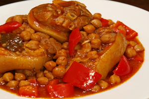
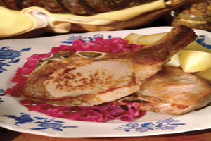
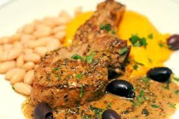
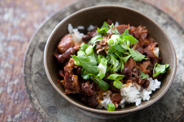
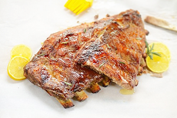

- Recipes
Patitas de Cerdo con Garbanzos
Puerto-Rican-Patitas de Cerdo con Garbanzos
Ingredients Needed:
Procedure:
1. Cut the meat into pieces and put them (pork hocks or pig's feet) in a large pot. 2. Add the water and boil on moderate high heat for 2 hours or until the (hocks) or pig's feet are tender. 3. Heat the olive oil in a deep pan. Add sofrito and the tomato sauce and sauté for about 5 minutes 4. Add to the pig's feet (or hocks), the drained chick peas, the boullion cube, the peeled pumpkin cut into pieces and the cubed potatoes. 5. Reduce heat to medium low and simmer covered for about 20 minutes.
Pan Seared Pork Chops
Germany-Pan Seared Pork Chops With Sautéed Red Cabbage
Ingredients Needed:
Brine
Procedure:
Brine
Bring 6 cups water, 1/4 cup kosher salt, 1/4 cup brown sugar, whole allspice, and bay leaves to boil in large saucepan, stirring to dissolve salt and brown sugar. Cool brine completely in refrigerator; add pork chops and refrigerate overnight.Red Cabbage
Heat olive oil in heavy large saucepan over medium-high heat. Add sliced red onion and sauté 2 minutes. Stir in bay leaf, sage sprig, and dried crushed red pepper. Add sliced red cabbage and cook until wilted and crisp tender, stirring often, about 10 minutes. Can be made up to 2 hours ahead.Pork
Preheat oven to 300°F. Remove pork chops from brine; pat dry. Season with ground black pepper, but no salt. Heat olive oil in heavy large ovenproof skillet over high heat. Sear pork chops in skillet until browned, about 3 minutes per side. Transfer skillet to oven and cook until thermometer inserted horizontally into pork chops registers 145°F, about 7 minutes. Transfer pork to plate (do not clean skillet). Add chicken broth, thyme sprig, sage leaves, rosemary sprig, and parsley sprig to skillet and boil until liquid is reduced to 1/2 cup, about 9 minutes. Discard herbs. Whisk in 1 teaspoon chopped sage and 1 tablespoon butter off heat. Keep warm. Rewarm cabbage. Stir in remaining 2 tablespoons butter and 2 tablespoons red wine vinegar. Season to taste with salt and pepper. Divide cabbage among plates. Place 1 pork chop on top of cabbage. Pour sauce on pork. A complementary addition is simple boiled new potatoes cut into quarters and seasoned with salt and pepper. 4 servingsRolled Pork
Netherland-Rolled Pork With Mustard Cream Sauce
Ingredients Needed:
Procedure:
Heat the butter in a heavy skillet. Sprinkle salt and pepper on the meat and spread on a tablespoon of the coarse mustard. Cook the meat for about 50 minutes. Take the meat from the pan. Add the stock, nutmeg, whole garlic cloves and the remainder of the mustard. Mix well with the meat juices and boil slowly for 5 minutes. With a fork, squeeze the garlic and discard the skin. Add the cream and boil down and reduce the sauce. If necessary, add cornstarch to thicken the sauce. Slice the meat tickly and put them tiles on a large platter. Pour over half of the sauce and put the rest of the sauce in a bowl. Serve with a mix of slightly boiled, crisp broccoli and cauliflower, and boiled potatoes.
Black Bean Stew
Brazilian-Black Bean Stew
Ingredients Needed:
Procedure:
1. Pour boiling water over the black beans and let them sit while you prepare the rest of the stew. 2. Heat the olive oil in a large pot over medium-high heat and brown the pork shoulder. When it has browned, remove the meat from the pot, set aside and add the onions to the pot. Brown them, stirring occasionally, scraping up any browned bits from the bottom of the pot. Sprinkle a little salt over the onions and add the garlic. Stir well and sauté 2 more minutes. 3. Add back the pork shoulder, and the other meats and add enough water to cover. Add the bay leaves, cover and bring to a simmer. Cook gently for 1 hour. Drain the black beans from their soaking liquid and add them to the stew. Simmer gently, covered, until the beans are tender, about an hour and a half. 4. Add the tomatoes, stir well and taste for salt, adding if it's needed. Simmer this, uncovered, until the meat begins to fall off the ham hock, which will probably take 2-3 hours.
Style Pork Ribs
Brazilian-Style Pork Ribs
Ingredients Needed:
Procedure:
1. Process or blend the first 10 ingredients in a food processor or blender until obtaining a homogeneous mixture. Put the ribs in a large, deep rectangular baking pan, spread the mixture over the ribs and marinate for 1 hour at room temperature. 2. Preheat oven to 350º F (180º C). 3. Cover pan with aluminum foil, tightly sealing its edges so that steam will not escape (the ribs will braise in their own liquids and the marinade). Then, let ribs cook in the oven for approximately 1 hour and 50 minutes (25-30 minutes per pound or ½ kg). Reserve the drippings/remaining marinade from the bottom of the pan and then transfer ribs to another large baking pan . Brush top of ribs with the oil and then, honey. Increase oven temperature to 425º F (220º C). Leave the pan uncovered this time and roast ribs for 10-25 minutes or until golden brown. Brush/baste the ribs with the reserved drippings/marinade from the first pan and let sit for 10 minutes before serving. Serve it accompanied by polenta and couve à mineira.